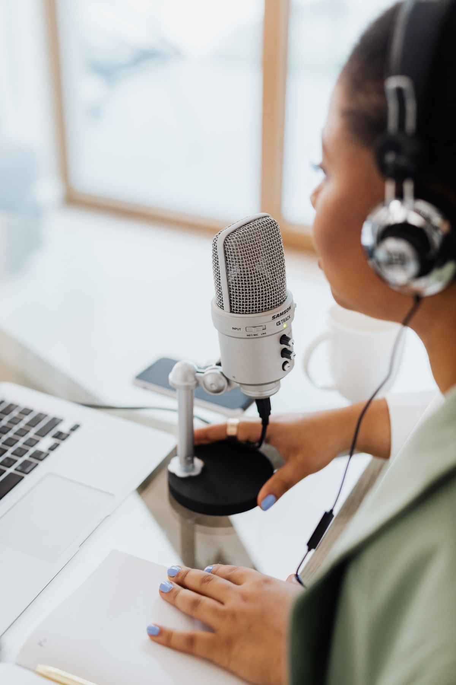
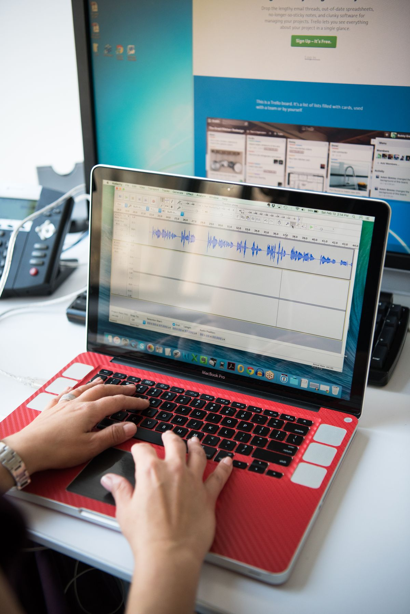
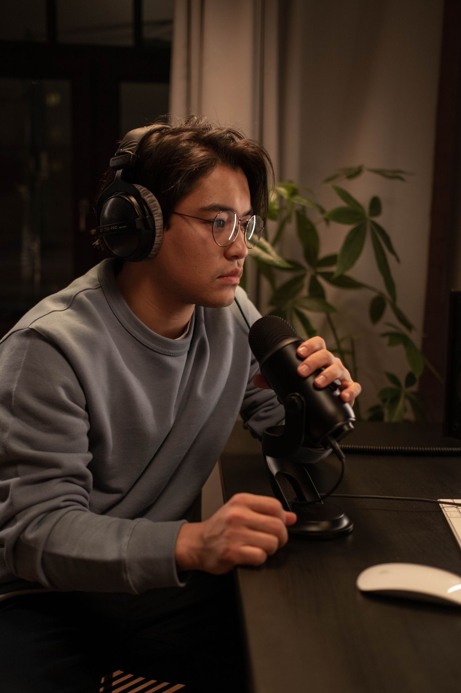

Banyak yang pengin bikin podcast atau voice over tapi mundur duluan karena mengira software edit audio profesional itu mahal. Adobe Audition misalnya, pakai sistem langganan sekitar $20,99 per bulan, yang kalau dihitung setahun bisa dipakai buat beli mikrofon yang lumayan. Padahal kamu bisa mulai dari Audacity: editor audio gratis dan open source yang sudah dipakai podcaster bertahun-tahun, dan jalan di Windows, Mac, dan Linux.
Per November 2026, Audacity tetap jadi rujukan utama aplikasi edit audio gratis tanpa jebakan. Selain itu ada juga beberapa alternatif gratis resmi lain dengan karakter berbeda, dari yang ringan buat laptop kentang sampai yang membersihkan audio secara otomatis. Artikel ini merangkum semuanya, lengkap dengan batas tiap aplikasi supaya kamu tidak salah pilih.

Kenapa Audacity Jadi Titik Awal Paling Aman
Audacity itu gratis tanpa paket berbayar, tanpa masa trial yang bisa kedaluwarsa, dan tanpa fitur yang dikunci akun. Kamu bisa merekam beberapa track sekaligus, memotong dan menyusun audio, memakai efek seperti noise reduction, kompresi, dan EQ, lalu mengekspor hasilnya ke MP3 atau WAV. Untuk kebutuhan podcast, voice over, sampai rekaman musik sederhana, fitur itu sebenarnya sudah lebih dari cukup.
Kejujuran yang perlu kamu tahu: tampilan Audacity terlihat teknis dan editingnya bersifat destructive, artinya perubahan langsung menempel permanen di track kecuali kamu membatalkannya. Pemula memang butuh waktu membiasakan diri dengan alur kerjanya. Tapi karena penggunanya sangat banyak, tutorial gratisnya berserakan di mana-mana, jadi kamu tidak akan kekurangan panduan.
Edit Podcast Pertama di Audacity: Langkah Paling Dasar
Kamu tidak perlu menguasai semua menu. Lima langkah ini cukup untuk menghasilkan episode pertama yang layak dengar:
- Rekam atau masukkan audio. Tekan tombol rekam merah untuk merekam langsung lewat mikrofon, atau pilih File lalu Import lalu Audio untuk memasukkan file rekaman dari HP.
- Potong bagian yang tidak perlu. Blok bagian diam yang terlalu lama atau salah ucap, lalu tekan Delete. Untuk podcast, potong secukupnya saja supaya obrolan tetap terdengar natural.
- Bersihkan noise. Blok beberapa detik bagian hening yang berisi noise, ambil profil noise lewat Effect lalu Noise Reduction lalu Get Noise Profile, kemudian pilih seluruh track dan jalankan Noise Reduction dengan pengaturan standar.
- Ratakan volume. Pakai Effect lalu Loudness Normalization atau Compressor supaya bagian suara pelan dan keras tidak timpang jauh. Pendengar HP sangat menghargai volume yang stabil.
- Ekspor hasilnya. Pilih File lalu Export lalu Export as MP3. Untuk podcast suara, MP3 sudah cukup dan ukuran filenya ringan buat diunggah ke platform hosting.

5 Alternatif Gratis Lain yang Resmi
Kalau Audacity terasa terlalu berat atau terlalu teknis, lima aplikasi ini bisa jadi pilihan, semuanya gratis dan resmi:
- Ocenaudio. Editor audio gratis yang ringan dan sederhana, tidak memberatkan komputer. Jalan di Windows, Mac, dan Linux. Cocok buat laptop kentang dan buat kamu yang menganggap Audacity terlalu rumit.
- GarageBand. Bawaan gratis untuk semua Mac, iPhone, dan iPad, tanpa perlu unduh atau beli. Antarmukanya paling ramah buat pemula, ada template podcast, dan loop musik bawaan yang boleh dipakai tanpa khawatir hak cipta. Satu-satunya syarat: kamu harus pengguna perangkat Apple.
- Auphonic. Layanan web yang membersihkan dan menyeimbangkan audio secara otomatis. Paket gratisnya memproses 2 jam audio per bulan, cukup buat podcast yang tayang tiap minggu. Pilihan tepat kalau kamu malas edit manual.
- Adobe Podcast Enhance Speech. Layanan web dari Adobe yang memakai AI untuk memperbaiki rekaman yang berisik, bergema, atau terdengar tipis. Gratis dipakai, dan berguna sebagai langkah penyelamatan sebelum masuk tahap editing.
- AudioMass. Editor audio gratis yang jalan langsung di browser, tanpa install dan tanpa daftar akun. Pas buat edit cepat di komputer pinjam atau di tempat yang tidak mengizinkan install aplikasi.
Satu peringatan penting: WavePad memang punya versi gratis, tapi lisensi gratisnya hanya berlaku untuk pemakaian nonkomersial. Artinya begitu podcast kamu ada sponsor atau rencana dimonetisasi, kamu sudah tidak boleh memakai versi gratisnya. Untuk amannya, pilih salah satu dari lima di atas.

Pilih yang Mana Sesuai Kebutuhanmu
Biar tidak bingung, pakai panduan singkat ini:
- Laptop Windows atau Linux, mau fitur paling lengkap tanpa batas: Audacity.
- Pemula yang pengin tampilan sederhana dan ringan: Ocenaudio.
- Pengguna Mac atau iPhone: GarageBand, sudah tersedia tanpa perlu install.
- Butuh edit cepat tanpa install aplikasi: AudioMass.
- Rekaman terlanjur berisik atau bergema: bersihkan dulu dengan Auphonic atau Adobe Podcast Enhance Speech, baru poles detailnya di Audacity.
Intinya, kamu tidak perlu langganan mahal untuk mulai podcast atau voice over. Audacity menutup hampir semua kebutuhan editing suara tanpa biaya sepeser pun, dan kalau ada kebutuhan khusus, alternatif gratis di atas tinggal kamu pilih sesuai kondisi laptop dan alur kerja kamu. Selamat merekam.
Sumber dan Info Resmi
Angka dan detail di artikel ini merujuk ke sumber berikut, yang sudah diverifikasi isinya:
- Rankite: Audacity gratis penuh tanpa trial atau fitur yang dikunci, jalan di Windows/Mac/Linux, multi-track, efek noise reduction, kompresi, dan EQ, ekspor MP3/WAV; GarageBand gratis untuk semua Mac, iPhone, dan iPad; Ocenaudio gratis dan ringan; AudioMass editor audio gratis di browser tanpa install; Adobe Podcast Enhance Speech gratis memakai AI untuk memperbaiki rekaman yang berisik atau bergema.
- Ausha: Adobe Audition memakai langganan $20,99 per bulan; Audacity open source untuk Windows/Mac/Linux; Auphonic gratis memproses 2 jam audio per bulan; WavePad versi gratisnya hanya berlaku untuk pemakaian nonkomersial.
- Techloadz: Audacity gratis dan open source sebagai alternatif Adobe Audition, dengan multi-track, efek audio, dan dukungan format yang luas.
- Filmora (Wondershare): Ocenaudio mudah dipakai; WavePad punya versi unduh gratis; GarageBand hanya tersedia di macOS dan iOS.